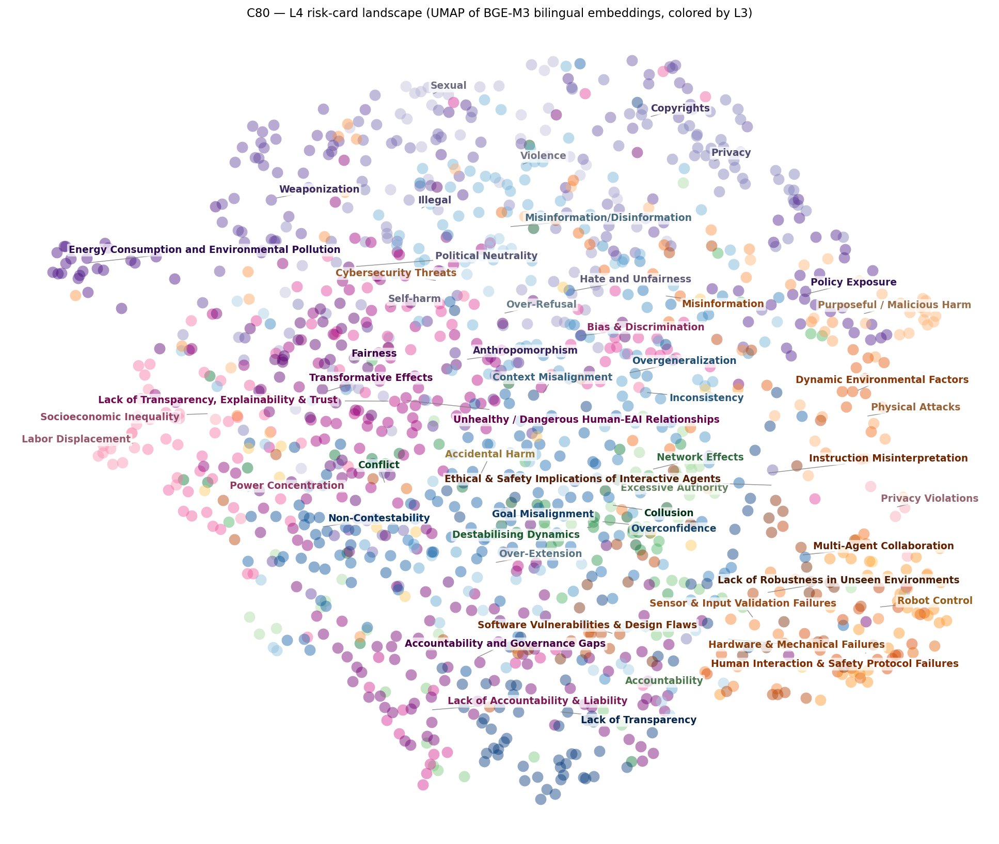
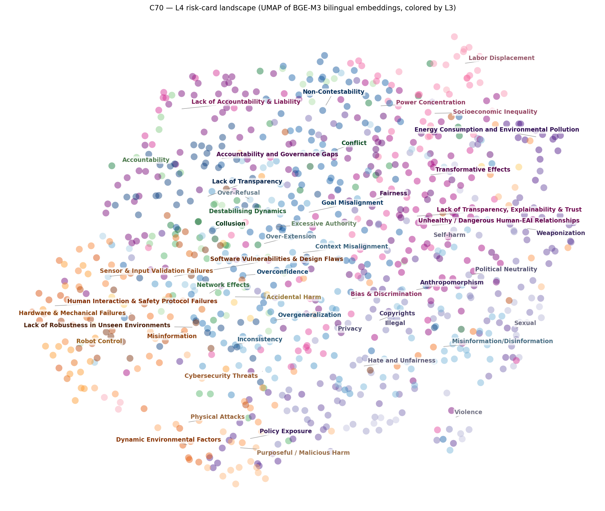

1. 방법
각 카드의 한/영 명칭과 정의를 임베딩한 뒤 2차원으로 투영했다. 점 하나가 L4 카드 한 장이고, 색은 최종 L3 배정을 따르며 색조 계열은 상위 L2 그룹별로 통일했다. 라벨은 각 L3 군집의 중앙 위치에 표기하고, 겹치는 라벨은 여백으로 옮겨 직선으로 연결했다.
2. 결과
C80 (τ=0.80)

C70 (τ=0.70)

3. 해석
국소 구조는 뚜렷하다. 물리 계열(로봇 제어, 센서·입력 검증, 하드웨어 고장 등)은 응집된 연속 지대를 이루고, 에너지·환경, 노동 대체, 사이버보안·무기화처럼 주제 결속이 강한 L3도 국소 군집으로 나타난다. 이 영역의 L3 배정은 의미 공간 구조와 잘 정합한다.
전역 분리는 약하다. 중앙부의 General 계열(공정성·편향, 오정보, 책임·투명성, 목표 오정렬)은 넓게 혼재하며, 특히 사회·거버넌스 계열이 전역에 퍼져 있다. 프라이버시·편향·책임처럼 같은 개념이 여러 L3에 걸쳐 있는 축 중복이 원인으로, 상호배타적이지 않은 층에서는 이웃 카드가 서로 다른 L3를 갖는 것이 필연적이다.
압축이 강할수록 혼합이 커진다. C70에서는 서로 다른 L3의 카드들이 한 장으로 병합된 경우가 늘어 경계가 더 흐려진다.
주의 — 2차원 그림의 거리·군집 크기는 정량 근거로 쓰면 안 되며, 배정의 결과를 보여줄 뿐
정오를 판정하지 않는다. 개별 카드의 옳고 그름은 휴먼 평가로 확인한다.
4. 결론
물리·환경·노동 등 결속이 강한 영역에서는 택소노미가 의미 구조와 정합하지만, 사회·거버넌스 영역의 L3 개념 중복이 배정 불확실성의 구조적 원인으로 확인된다. 릴리스 전 해당 계열의 축 정리 검토를 권고한다.